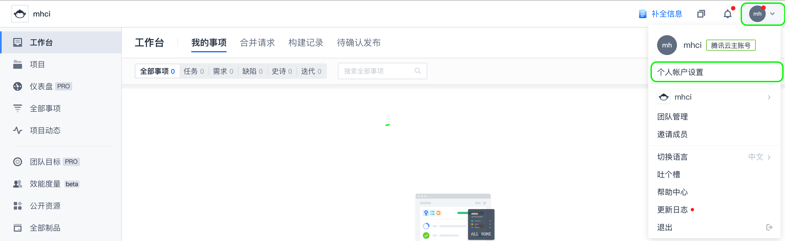

记一次在Mac上安装Hexo并部署到Coding
title: 记一次在Mac上安装Hexo并部署到Coding
date: 2021-02-02 15:17:15
categories: 计算机
tags:
-
Mac
-
Hexo
安装Hexo
安装Git
1.首先得安装Xcode Command Line Tools，官方文档说需要先安装Xcode，其实可以不安装，直接通过Xcode Command Line Tools安装包安装，有两种方式：
①通过我的安装包安装，我的也是从Apple官网下载下来的：MHCII Share
②进入Apple开发者官网下载（需要有Apple开发者账号）：Apple Developer
2.安装Homebrew，可通过下面的脚本安装，脚本托管于码云，速度很快
/bin/zsh -c "$(curl -fsSL https://gitee.com/cunkai/HomebrewCN/raw/master/Homebrew.sh)"
3.通过brew安装git
brew install git
安装Node.js
brew install node
如果不出意外的话输入'node'就可以看到node的版本信息了，如果出错请自行百度排除
安装Hexo
$ npm install -g hexo-cli
$代表需要root权限来执行命令，可预先su进入root根目录，也可使用'sudo npm install -g hexo-cli'来执行
生成Hexo网站
cd documents
$ hexo init blog
$ cd blog
$ npm install
上述代码中cd后面的目录是你创建的网站所在的目录（现在是在‘文稿’文件夹下）；blog是你创建的网站的目录（可以换成自己需要的名称）
不出意外的话现在在文稿文件夹下就生成了blog文件夹，这就是你刚刚生成的Hexo网站目录
将Hexo运行在本地
cd documents/blog
hexo server
不出意外的话你会看到下面的代码
INFO Validating config
INFO Start processing
INFO Hexo is running at http://localhost:4000 . Press Ctrl+C to stop.
这个时候就说明你的Hexo已经运行成功了，访问http://localhost:4000就可以看到你的Hexo页面
Hexo基本操作
修改网站基本信息
使用Finder打开 文稿/blog/_config.yml，按照注释修改，详细可参考官网
修改主题
1.进入Hexo Theme寻找合适的主题
2.点击主题标题进入主题GitHub页面
3.Readme中有主题的详细安装方法和修改方法，主要有两个步骤：
①将主题放到 文稿/blog/themes/ 下
②修改 文稿/blog/_config.yml
theme: [主题名称]
👆打开 _config.yml 找到 theme 字段，修改主题名称为安装的主题
4.对主题的配置在GitHub页都有详细的说明，按照说明自行修改即可
5.打开刚刚的地址http://localhost:4000就可以看到主题应用后的效果了
生成静态页面
cd documents/blog #进入Hexo网站目录
hexo clean #清除以前生成的内容，第一次可以不运行
hexo g #生成静态页面
这个时候会在 文稿/blog/ 中生成一个public文件夹，这个就是生成的静态html页面文件
部署至Coding
（coding其实是依靠腾讯云cos作为部署容器的）
配置Coding仓库
1.首次登陆需要创建团队，按提示操作即可
2.登陆后点击 项目-->创建项目-->DevOps项目
3.代码仓库-->新建代码仓库-->确认
4.复制仓库的git地址
5.打开 文稿/blog/_config.yml 滑到最下面找到 deploy，修改deoloy字段
deploy:
type: git
repo: https://... #修改为刚刚复制的地址
branch: master #仓库名称（如果按我的设置的就为master）
上传网站到Coding
1.上传前一定要先设置一下账户信息，进入页面之后绑定一个手机号或者邮箱，再设置一下密码

2.上传代码到coding
cd documents/blog/
hexo d
接下来输入账号（就是刚刚绑定的手机号或者邮箱）
输入密码（刚刚设置的密码）
部署静态网站
1.持续部署-->静态网站
2.依次完成三步认证
3.根据自己需要设置网站信息
4.根据需要绑定域名
🔗参考：